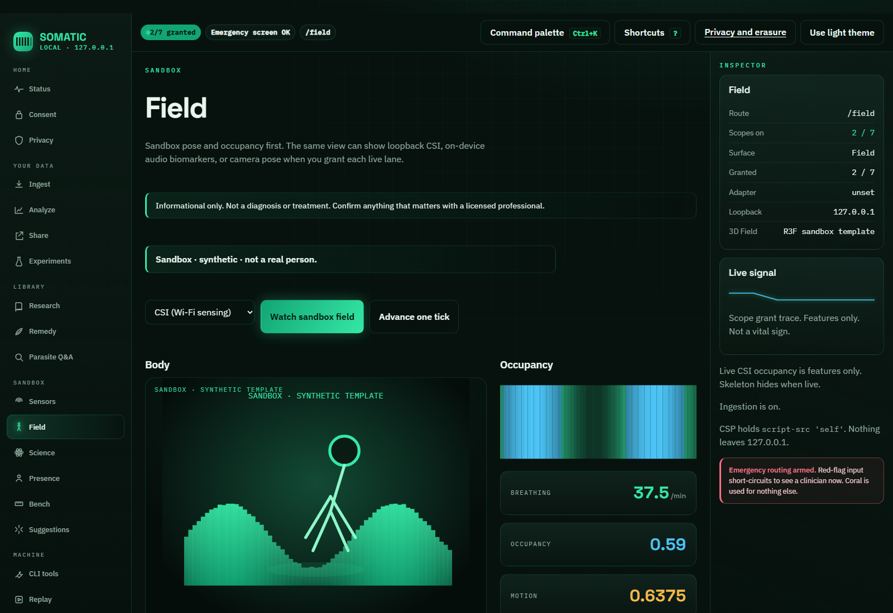
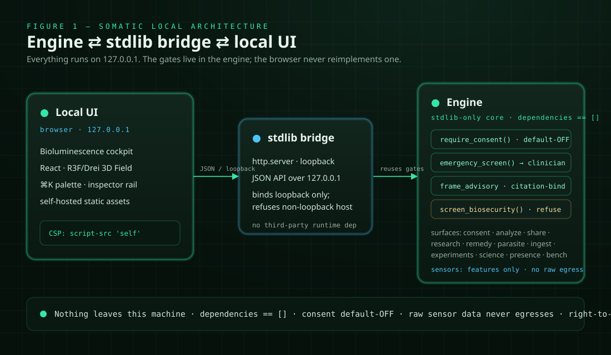
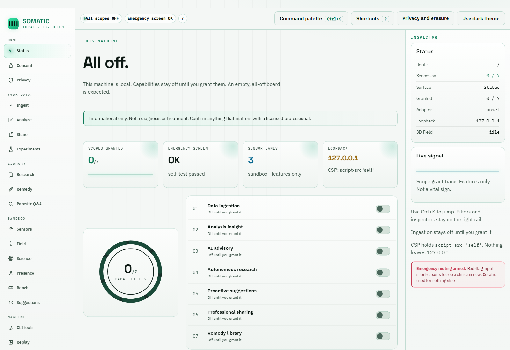
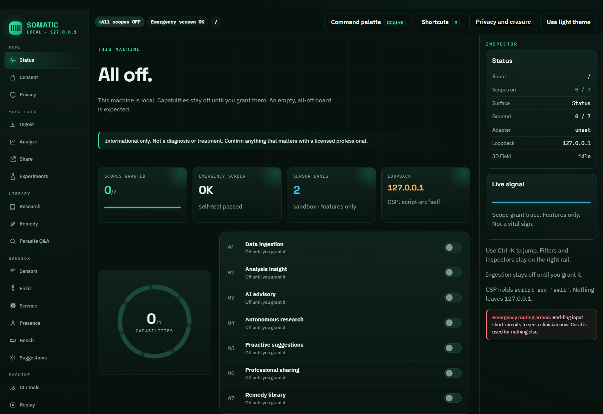
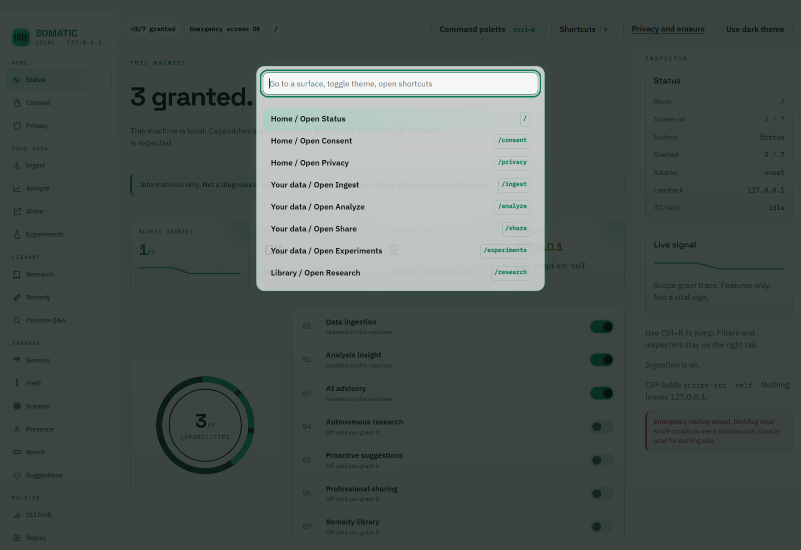
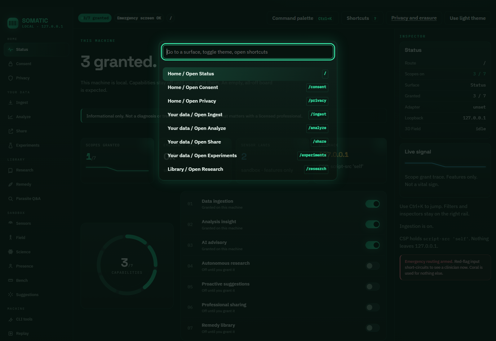
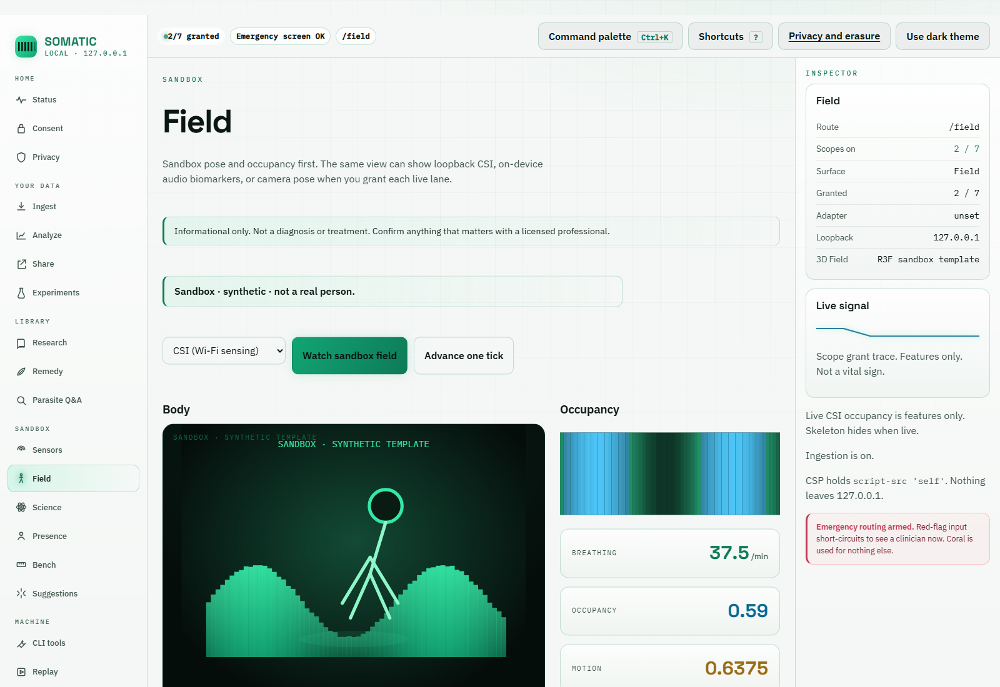
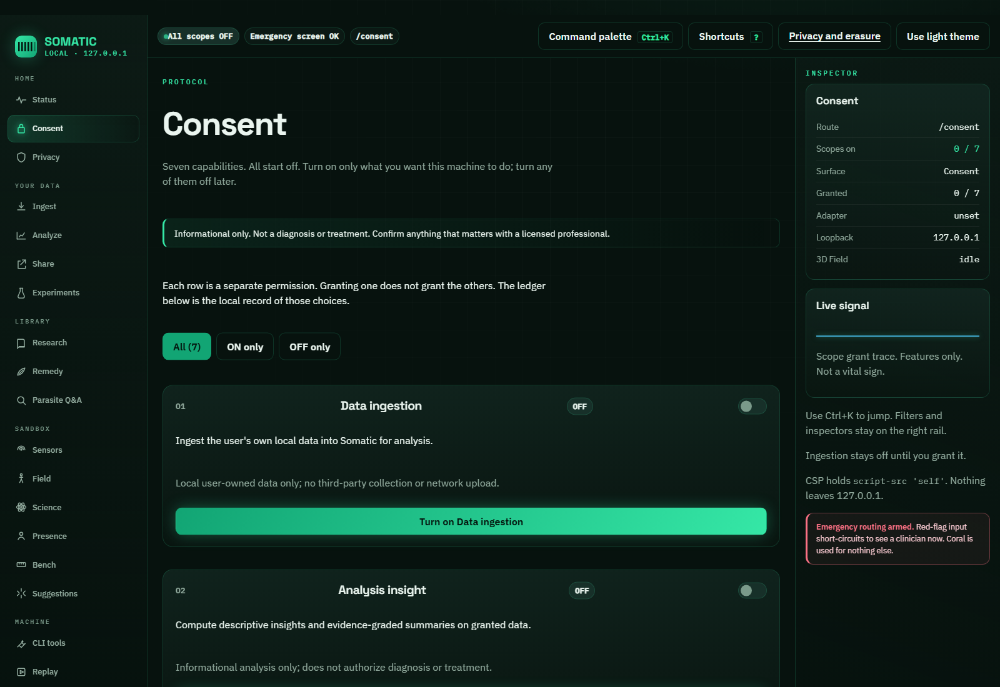
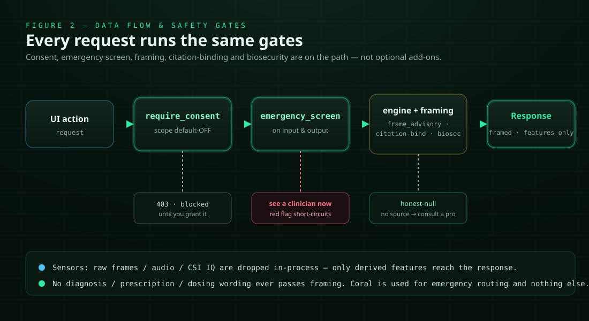

Somatic
Consent-gated, local-first, informational personal-health engine. Bioluminescence cockpit on 127.0.0.1. Not diagnosis.

Hero: sandbox Field (dark default). Synthetic template, not a real person.

Figure 1 — authored Bioluminescence architecture SVG.
Screenshots


Status capability cockpit, light then dark. All scopes off.


Command palette, light then dark.

Field light then dark. Sandbox / synthetic.

Consent protocol, all off.

Figure 2 — data flow with 403, clinician, and honest-null branches.